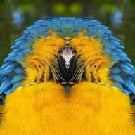

Зеркало

Отражает половину изображения относительно линии зеркала, заданной углом и центром.
Настройки
| Настройка | Тип | Диапазон | По умолчанию |
|---|---|---|---|
| Угол | Угол | от 0° до 360° | 90° |
| Центр | Точка (X, Y) | от 0 до 1 | 0.5, 0.5 |

Отражает половину изображения относительно линии зеркала, заданной углом и центром.
| Настройка | Тип | Диапазон | По умолчанию |
|---|---|---|---|
| Угол | Угол | от 0° до 360° | 90° |
| Центр | Точка (X, Y) | от 0 до 1 | 0.5, 0.5 |